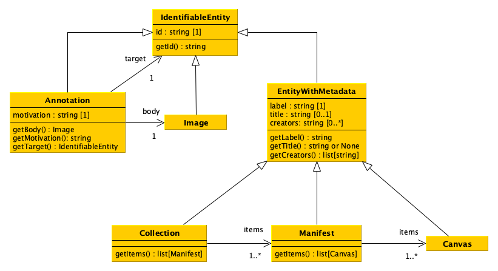

Introduction to the course and final project specifications#
A preliminary introduction to the basic tools that enable you to start a Data Science project (and get the final score for the integrated course “Computational Management of Data”)
Data Science life cycle (and what we will address)#
Berman, F., Rutenbar, R., Hailpern, B., Christensen, H., Davidson, S., Estrin, D., Franklin, M., Martonosi, M., Raghavan, P., Stodden, V., & Szalay, A. S. (2018). Realizing the potential of data science. Communications of the ACM, 61(4), 67–72. https://doi.org/10.1145/3188721
It is a practical course#
Computer, your best friend

Gettysburg College, https://www.flickr.com/photos/gettysburgcollege/3082146647/; A.Davey, https://www.flickr.com/photos/adavey/40903187052/
Rules#
Let’s see the rules of this course:
There are no text books provided: if you have a doubt, google it
Material that will be introduced in the course can be found on the GitHub repository of the course
If you cannot attend, do not attend (even if attendance is highly recommended : you can ask questions)
At least six exam sessions per academic year
Max score one can obtain is 32 (out of 30)
Course material#
All the material (including slides) is available in the GitHub repository of the course at comp-data/2022-2023 Have you found a mistake in the material? Please write me an email at silvio.peroni@unibo.it
Some (partial) suggested (external) material (for Python and data management with Python):
Peroni, S. (2020). Computational Thinking and Programming book. https://comp-think.github.io
Tagliaferri, L. (2018). How To Code in Python. ISBN: 978-0999773017. https://www.digitalocean.com/community/books/digitalocean-ebook-how-to-code-in-python
Walsh, M. (2021). Introduction to Cultural Analytics & Python. https://melaniewalsh.github.io/Intro-Cultural-Analytics/
The Programming Historian. ISSN: 2397-2068. https://programminghistorian.org/en/
Dombrowski, Q. (2020). Jupyter notebooks for digital humanities. quinnanya/dh-jupyter
Communications#
We use a Slack discussion group for communicating with each other
Slack is a communication platform offering many IRC-style features, including persistent chat rooms (channels) organized by topic, private groups, and direct messaging, and can be used in any device (it has been developed for mobile and desktop devices)
Invitation link to join the workspace:
https://join.slack.com/t/essepuntato-uni/shared_invite/zt-1nze31alj-owLJTDp0AAqoByQVIBUgJg
Once you entered in the workspace following the previous link, please send a message in the channel “#general” asking for being added by me to the private channel of the course (“data-science-22-23”)
Please, do a Slack account as soon as possible (e.g. during the break) since I will close the invitation link in at the end of this week – and we will start to use it since Friday
Interacting#
We will use the GitHub repository of the course for a series of activities, such as exercises and raising issues
All questions about coding to ask to either me or your fellows must be asked as new issues
Thus, please, create a new account on GitHub: join
Once logged into GitHub, go to the issue page of the course repository, and then feel free to add and respond to issues there
A very introductory guide to GitHub can be find online
Course organisation#
This introductory lecture
Theoretical lectures (7 lectures, 14 hours), where I provide a theoretical introduction about the specific topic – computer not necessary but you can bring it with you of course
Hands-on sessions (7 lectures, 14 hours), where I run a laboratory activity session based on existing tools that enable the experimentation with the topics introduced in the theoretical lectures – computer mandatory
Tutor sessions (to be agreed with the tutor), where Arcangelo Massari recalls some of the topics introduced in the course according to your specific needs
Course calendar#
All lectures 12:30 - 14:30, lectures in red , hands-on in blue
03/02/2023 |
What is a datum and how it can be represented computationally |
22/02/2023 |
Configuring and populating a relational database |
|---|---|---|---|
06/02/2023 |
Data formats and methods for storing data in Python |
24/02/2023 |
SQL, a query language for relational databases |
08/02/2023 |
Introduction to data modelling |
27/02/2023 |
Configuring and populating a graph database |
10/02/2023 |
Implementation of data models via Python classes |
01/03/2023 |
SPARQL, a query language for RDF databases |
13/02/2023 |
Processing and querying the data |
06/03/2023 |
Interacting with databases using Pandas |
15/02/2023 |
Introduction to Pandas |
08/03/2023 |
Describing and visualising data |
17/02/2023 |
Database Management Systems |
10/03/2023 |
Descriptive statistics and graphs about data using Pandas |
Exam#
The exam consists of
the implementation of a project – yes, you have to write a software, and the specifications will be introduced today
an oral colloquium on the project implemented, for assessing the contribution of each student
It will be assigned maximum 16 points for the correctness of the project – I will run a series of tests aiming at assessing all the code developed
The points above are assigned to all the students that have worked to the project
Other 16 points (maximum) will be assigned to each individual student as result of the oral colloquium
Groups#
You have to organise in groups
3-4 people (not less, not more)
You have to choose a name for the group (please, be creative)
Before the next lecture, I will post a link on Slack to subscribe your group
I would strongly suggest to split the work, so as to have a reasonable amount of code to implement
Registering final grade#
As you know, this course is just a module of an Integrated Course (I. C.)
Computational Management of Data (Integrated Course)
Module 1: Computational Thinking and Programming (first semester course, done)
Module 2: Data Science (this course!)
You can register only the final grade of the Integrated Course, which is computed as the average of the final scores of the two modules (max. 30L each module)
Evaluation of the course#
The last lectures of the course, you will be asked to fill-up a questionnaire on the organisation of the course and related stuff - it is anonymous, of course
Please, do it carefully and honestly, since it is one of the most important inputs I will have to understand what can be improved in the next year course
This is the second year for this course, and thus it is crucial to have your feedback in order to understand how to improve it for the next year
JupyterLab#
JupyterLab is a web-based interactive development environment for notebooks, code, and data
You need to have Python installed to running Jupyter – you can find instruction for installing Python in the first laboratory lecture of the Computational Thinking and Programming course
To install JupyterLab, you can use the command pip as follows:
pip install jupyterlab
It will be used for all the hands-on sessions, thus be sure to have it available on your computer, and the website includes a very good documentation, while a lot of tutorials are available online
The project#
Overall goal of the project#
Develop a software that enables one
to process data stored in different formats and to upload them into two distinct databases
to query these databases simultaneously according to predefined operations
Information about the project can be found in the GitHub repository of the course (and will be updated in due course)
Workflow#
Data model#
The data model of the various entities to handle is based on the IIIF Presentation API v3 – which is a way to standardise the delivery of images and audio/visual files from servers to different environments on the Web where they can then be viewed and interacted with in many ways

Software: UML diagram (1/2)#

Software: UML diagram (2/2)#
Submission of the project#
You have to provide all Python files implementing your project, by sharing them in some way (e.g. via OneDrive)
You have to send all the files two days before the exam session you want to take
Before submitting the project, you must be sure that your code passes a particular basic test (that will be provided soon) which aims at checking if the code is runnable and compliant with the specification
The schedule of the first four exam sessions: May, June, July, September
Suggestion: use the test-driven development#
You already know what is the test-driven development (TDD) – to refresh your memory, you can look at this slide (and scream…)
I strongly suggest you to systematically adopt this development technique for developing your code
In addition, there is at least a Python library available which has been entirely developed to facilitate the creation of tests, i.e. unittest
Online, you can find several documents describing how to create tests in Python, such as one at the Real Python website